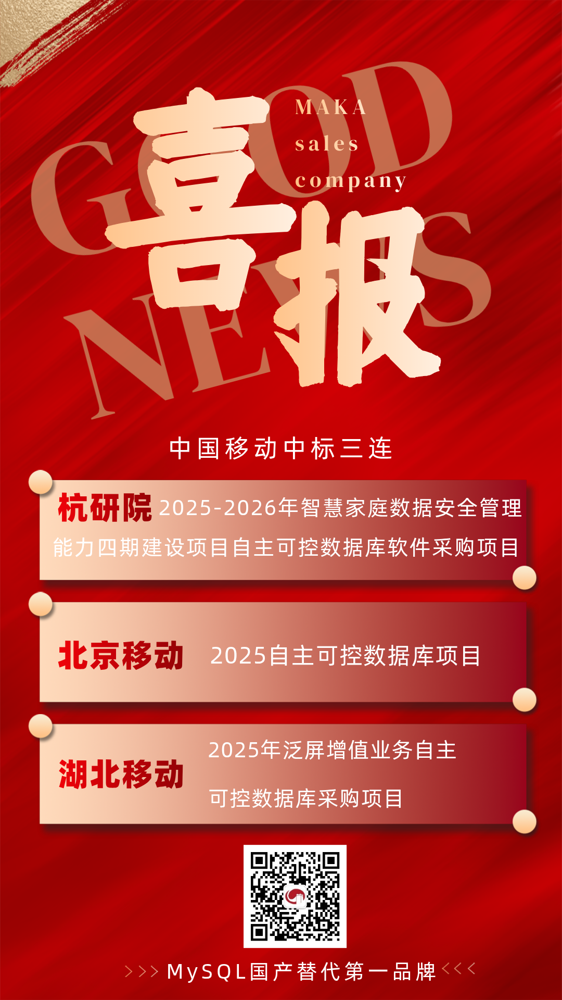
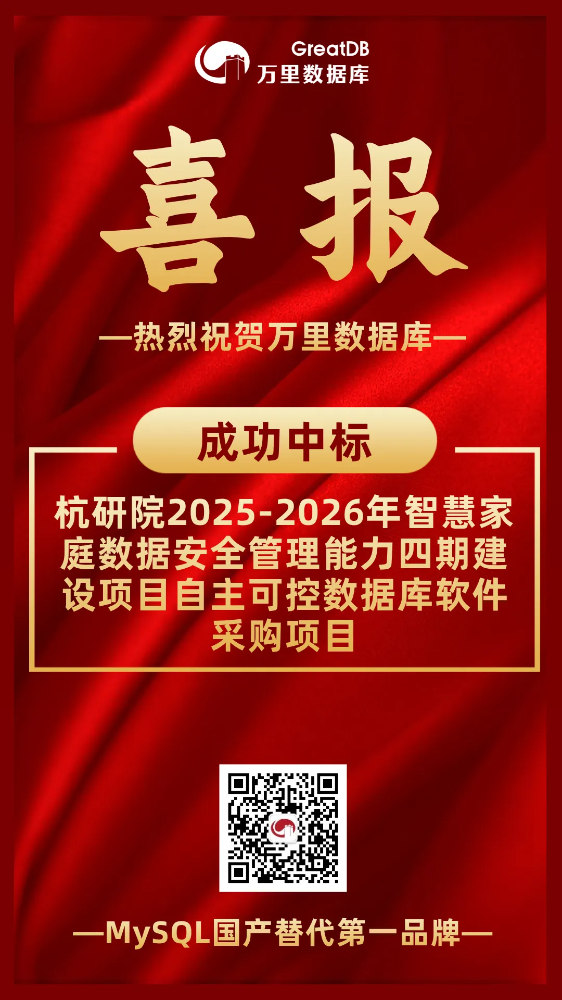
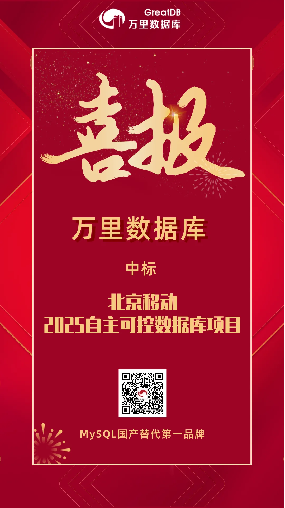
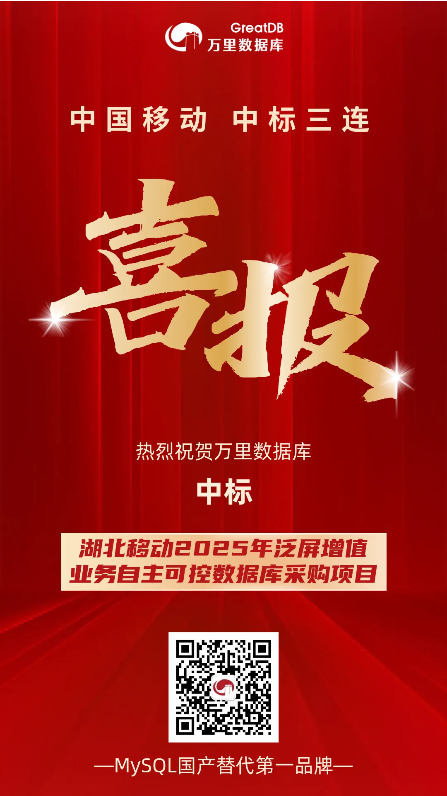

喜报｜中国移动中标三连！万里数据库彰显全域布局实力
硕果金秋，捷报频传！
近日，万里数据库在中国移动连续斩获三大项目：杭研院、北京移动、湖北移动相继选择万里数据库作为其自主可控数据库产品提供商。这一系列中标不仅是市场对万里数据库产品实力的高度认可，也进一步巩固了公司在运营商核心系统建设中的关键地位。

1 深耕“智慧家庭” 杭研院项目持续护航
在杭研院“2025-2026年智慧家庭数据安全管理能力四期建设项目自主可控数据库软件采购项目”中，万里数据库将承接智慧家庭业务背后的数据管理支撑任务。
值得关注的是，这已是万里数据库连续第二年中标该项目——在去年的“2024-2025年智慧家庭数据安全管理能力三期建设项目国产数据库采购项目”中，公司已凭借优异的产品表现赢得客户信任。此次再度携手，标志着双方合作已进入持续深化、互信共赢的新阶段。

2 助力“首都”核心系统升级 项目意义深远
在北京移动“2025自主可控数据库项目”中，万里数据库将为其核心业务系统提供安全、稳定、高性能的数据库产品与服务。
此次合作是对万里数据库产品可靠性、技术先进性与服务保障能力的又一次重要验证，进一步强化了公司在北京这一战略市场的深度布局。

3 拓展“荆楚”大地 中部市场布局深化
在湖北移动“2025年泛屏增值业务自主可控数据库采购项目”中，万里数据库将为湖北移动泛屏增值业务提供核心数据存储与处理支持。
该项目是公司业务版图向华中区域扩展的关键一步，也体现了万里数据库在运营商核心业务场景中持续落地与服务的能力。

金秋三连捷 秉持初心前行
接连在中国移动下辖的杭研院、北京移动、湖北移动三大重要市场中标，充分印证了万里数据库在技术领先性、产品稳定性与服务及时性等方面的综合优势。作为国产数据库企业中的重要力量，万里数据库始终致力于为运营商及各行业客户提供高性能、高可用、高安全的数据管理产品与解决方案。
未来，万里数据库将继续秉持“技术立业、客户为先”的理念，以更成熟的产品体系与更完善的服务能力，携手更多行业伙伴，共同推进关键系统数字化转型与自主可控进程，为国家数字经济发展筑牢数据基石。